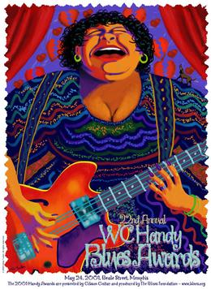

ХЭНДИ-2001

На 22 церемонии вручения главной блюзовой премии - имени ДаблЮ-Си-Хэнди - объявлены первые лауреаты нового века. Артистом года стал БиБиКинг. У него же премия за лучший альбом современного блюза, записанный им напару с Эриком Клэптоном: "Riding with the king". Альбом "Wicked" принес премию "За лучший блюзовый альбом года" молодой певице Шемекии Коплэнд. У нее же "Лучшая современная певица года". "Соул-певицей года" названа Этта Джеймс. Оно же в этом году "зачислена" в "Зал славы блюза". Новый альбом Сана Силза безусловно заслуживает премии года, но почему она выпала в категории "Альбом традиционного блюза" - понять невозможно. (Впрочем, меня ужасает и плакат нынешнего года: неприятные краски, истеричная дама и странный 4хструнный гибсон, что ли?.)
На церемонии выступали Taj Mahal & the Phantom Blues Band, Bobby Rush, Eddy Clearwater, Clarence "Gatemouth" Brown, Big Jack Johnson, Kim Wilson and Levon Helm.
Подробную информацию с иллюстрациями вы найдете на сайте Blues Foundation, которая и заведует премией W.C.Handy Awards.
Полный список лауреатов W.C.Handy-2001:
- Acoustic Album of the Year - Robert Lockwood, Jr.
- Acoustic Artist of the Year - Keb' Mo'
- Band of the Year - Taj Mahal & The Phantom Blues Band
- Best New Artist of the Year - North Mississippi Allstars
- Blues Album of the Year - Shemekia Copeland
- Comeback Album of the Year - Mel Brown
- Contemporary Album of the Year - B.B. King/Eric Clapton
- Contemporary Female Artist of the Year - Shemekia Copeland
- Contemporary Male Artist of the Year - Eddy Clearwater
- Entertainer of the Year - B.B. King
- Historical Blues Album of the Year - Otis Spann
- Instrumentalist of the Year-Bass - Willie Kent
- Instrumentalist of the Year-Drums - Chris Layton
- Instrumentalist of the Year-Guitar - Duke Robillard
- Instrumentalist of the Year-Harmonica - Charlie Musselwhite
- Instrumentalist of the Year-Horns - Roomful of Blues
- Instrumentalist of the Year-Keyboards - Pinetop Perkins
- Instrumentalist of the Year-Other - Clarence "Gatemouth" Brown
- Song of the Year - It's 2 A.M. Vito (Shemekia Copeland, Wicked)
- Soul Blues Album of the Year - Irma Thomas
- Soul Blues Female Artist of the Year - Etta James
- Soul Blues Male Artist of the Year - Little Milton
- Traditional Album of the Year - Son Seals
- Traditional Female Artist of the Year - Koko Taylor
- Traditional Male Artist of the Year - James Cotton
Полный список номинантов: